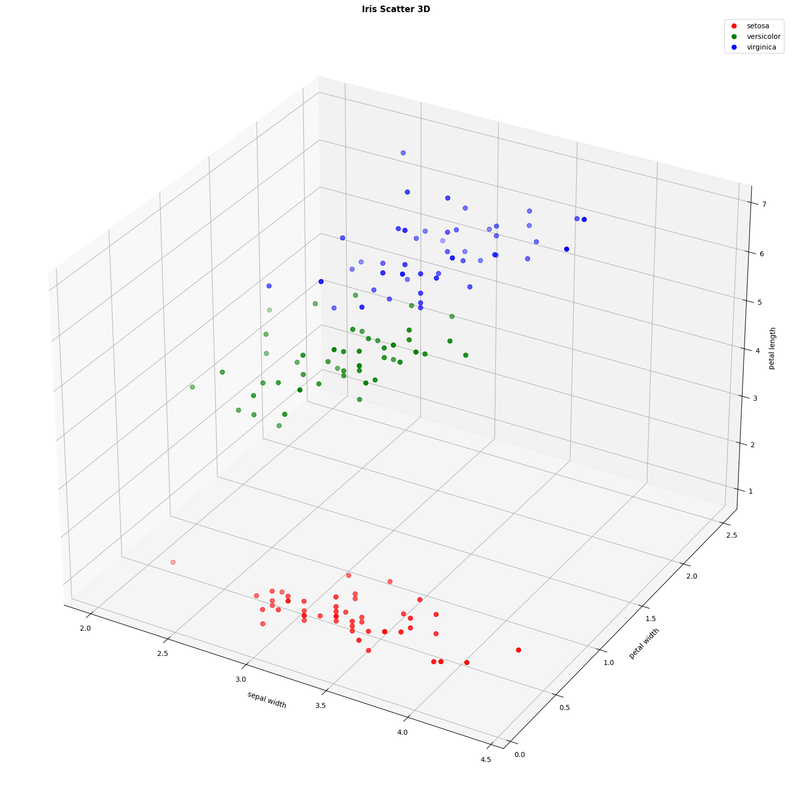

Iris Flower Classification: A Machine Learning Project with SVM Optimization in Python
5-minute read
In this project we use the famous Iris dataset, one of the most widely used datasets in machine learning. It contains 150 flower samples, equally distributed among three species: setosa, versicolor, and virginica. Each flower is described by four numerical features:
- Sepal length (cm) — The length of the sepal.
- Sepal width (cm) — The width of the sepal.
- Petal length (cm) — The length of the petal.
- Petal width (cm) — The width of the petal.
The goal is to build a classification model that predicts the flower species based on these features. To achieve this, we use a Support Vector Machine (SVM) classifier with a pipeline that includes:
- Data preprocessing — Features are standardized using
StandardScaler. - Model selection — An SVM with an RBF kernel is trained.
- Hyperparameter tuning — The parameters
Candgammaare optimized usingGridSearchCVwith cross-validation. - Performance tracking — Performance is measured with accuracy, precision, recall, F1-score, and confusion matrices.
Import packages
import pandas as pd
import matplotlib.pyplot as plt
import seaborn as sns
from mpl_toolkits.mplot3d import Axes3D
from sklearn.datasets import load_iris
from sklearn.model_selection import train_test_split, GridSearchCV
from sklearn.preprocessing import StandardScaler
from sklearn.svm import SVC
from sklearn.metrics import (accuracy_score, classification_report, confusion_matrix,
ConfusionMatrixDisplay, precision_score, recall_score, f1_score)
from sklearn.pipeline import PipelineLoad dataset and Create dataframe
data = load_iris()
X, y = data.data, data.target
feature_names = data.feature_names
target_names = data.target_names
df = pd.DataFrame(X, columns=feature_names)
df['target'] = y
df['species'] = df['target'].map({0: 'setosa', 1: 'versicolor', 2: 'virginica'})
print(f"Dataset Dimensions: {X.shape}")
print(f"Available Characteristics: {feature_names}")
Train-Test
X_train, X_test, y_train, y_test = train_test_split(
X, y, test_size=0.2, random_state=42, stratify=y
)
print(f"Training Variable: {X_train.shape[0]} samples")
print(f"Testing Variable: {X_test.shape[0]} samples")
Pipeline for SVM
svm_pipeline = Pipeline([
('scaler', StandardScaler()),
('svm', SVC(kernel='rbf', random_state=42, probability=True))
])Optimal hyperparameter search
svm_param_grid = {
'svm__C': [0.1, 1, 10, 100],
'svm__gamma': [0.001, 0.01, 0.1, 1, 'scale']
}RBF Kernel
- xi, xj: data vectors (training samples).
- ‖xi - xj‖2: squared Euclidean distance between the two points.
- σ: controls the width of the Gaussian.
- k(xi, xj): similarity measure (1 = similar, 0 = far apart)
In SVM Loss with L2 Regularization:
- w: weight vector of the hyperplane.
- b: bias term.
- ‖w‖2: L2 regularization term (penalizes large weights).
- C: trade-off parameter between margin size and correct classification.
- n: number of samples.
- yi: label of sample i (1 or -1).
- φ(xi): feature transformation of xi (done by the RBF kernel).
- max(0, 1 - yi(…)): hinge loss (penalty if a sample is misclassified or too close to the margin).
Best SVM model
svm_grid = GridSearchCV(svm_pipeline, svm_param_grid, cv=5)
svm_grid.fit(X_train, y_train)
best_svm = svm_grid.best_estimator_
y_pred_svm = best_svm.predict(X_test)
y_pred_proba_svm = best_svm.predict_proba(X_test)Create subplots and set the figure size
figura = plt.figure(figsize=(22, 16))
colors = {'setosa':'red', 'versicolor':'green', 'virginica':'blue'}
ax2 = figura.add_subplot(111, projection='3d')
for specie, df in df.groupby('species'):
ax2.scatter(df['sepal width (cm)'], df['petal width (cm)'], df['petal length (cm)'], c=colors[specie], label=specie, s=40)
ax2.set_xlabel("sepal width")
ax2.set_ylabel("petal width")
ax2.set_zlabel("petal length")
ax2.set_title("Iris Scatter 3D", fontweight='bold')
ax2.legend()
fig, axes = plt.subplots(2, 2, figsize=(15, 12))
# Confusion matrix
cm = confusion_matrix(y_test, y_pred_svm)
disp = ConfusionMatrixDisplay(confusion_matrix=cm, display_labels=target_names)
disp.plot(ax=axes[0,0], cmap='Blues')
axes[0,0].set_title('CONFUSION MATRIX', fontweight='bold')
# Correlation matrix located in axes[0,1]
corr_matrix = df[['sepal length (cm)', 'sepal width (cm)',
'petal length (cm)', 'petal width (cm)']].corr()
sns.heatmap(corr_matrix, annot=True, cmap='coolwarm', center=0,
ax=axes[0,1], fmt='.2f', square=True)
axes[0,1].set_title('CORRELATION MATRIX', fontweight='bold')
# Petal length distribution located in axes[1,0]
sns.boxplot(x='species', y='petal length (cm)', data=df, ax=axes[1,0],
hue='species',
palette=["#E61313", "#0CCF60", "#170DDF"],
legend=False)
axes[1,0].set_title('PETAL LENGTH DISTRIBUTION BY SPECIES', fontweight='bold')
axes[1,0].set_ylabel('Petal Length (cm)')
axes[1,0].set_xlabel('Specie')
# Sepal width distribution located in axes[1,1]
sns.histplot(data=df, x='sepal width (cm)', hue='species',
ax=axes[1,1], palette=['#E61313', '#0CCF60', '#170DDF'],
alpha=0.6, element='step', kde=True)
axes[1,1].set_title('SEPAL WIDTH DISTRIBUTION BY SPECIES', fontweight='bold')
axes[1,1].set_xlabel('Sepal Width (cm)')
# Last step of creating subplots
plt.tight_layout()
plt.show()Accuracy results
print(f"Cross-validation accuracy: {svm_grid.best_score_:.5f}")
print(f"Test set accuracy: {accuracy_score(y_test, y_pred_svm):.5f}")
Metrics by class
precision = precision_score(y_test, y_pred_svm, average=None)
recall = recall_score(y_test, y_pred_svm, average=None)
f1 = f1_score(y_test, y_pred_svm, average=None)
report = classification_report(y_test, y_pred_svm, target_names=target_names, digits=5)
print(f"{report}")

The empty cells in the "accuracy" row (under precision and recall) exist because accuracy is a single overall metric for the model, not broken down by those categories.
Final Output
results_df = pd.DataFrame({
'Real': y_test,
'Prediction': y_pred_svm,
'Correct': y_test == y_pred_svm
})
results_df['Real_Especie'] = results_df['Real'].map({0: 'setosa', 1: 'versicolor', 2: 'virginica'})
results_df['Pred_Especie'] = results_df['Prediction'].map({0: 'setosa', 1: 'versicolor', 2: 'virginica'})
print(f"NUMBER OF CORRECT PREDICTIONS: {results_df['Correct'].sum()}/{len(results_df)}")
print(f"FINAL ACCURACY: {accuracy_score(y_test, y_pred_svm):.5f}")
print(f"BEST HYPERPARAMETERS: {svm_grid.best_params_}")
We finally have:
- Number of correct predictions: 29/30
- Final accuracy: 96.667% (0.96667)
- Best hyperparameters:
- C: 1
- γ: 0.1 
.png)
Conclusions
- Petal features are more discriminative than sepal features
- The SVM model achieves high accuracy in multiclass classification
- The species setosa is the easiest to classify, however, versicolor and virginica show some overlap
This project demonstrates how machine learning can extract meaningful patterns, in this specific case, from botanical data. Could we apply this same approach to your classification challenge? Let's connect to discuss how SVM or other ML models could solve your business problems.
View Full Code on GitHub